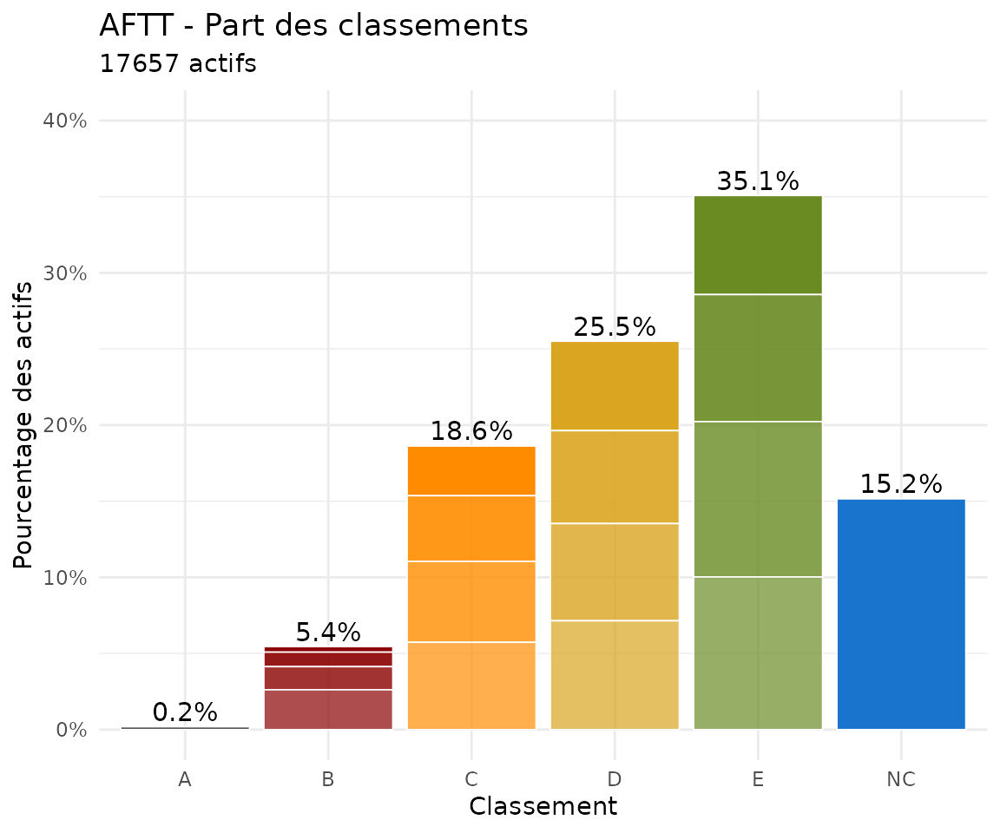
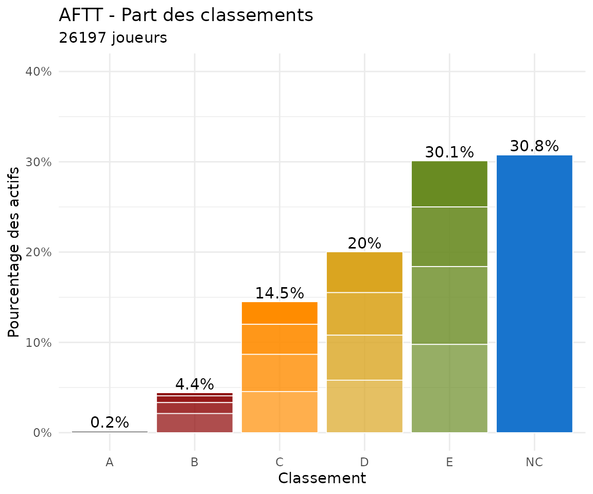
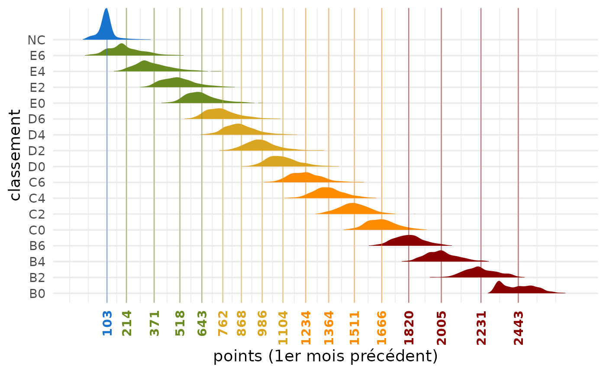

Global Classements Analysis (all AFTT)
Source:vignettes/Vignette3_GlobalAnalysis.Rmd
Vignette3_GlobalAnalysis.RmdAnalysis of current percentage of each classement
# Active players
Actifs_AFTT <- players_m[players_m[, "position_bis"] != "Inactive", ]
# Actives by classement
tab_classement_Actifs_AFTT <- table(Actifs_AFTT[, "classement"])
pct_classement_AFTT <- tab_classement_Actifs_AFTT / nrow(Actifs_AFTT)
df_class_AFTT <- data.frame(
classement = names(tab_classement_Actifs_AFTT),
pct_classement_AFTT = round(as.numeric(pct_classement_AFTT),digits=4)
)
noAB0<-c("NC","E6","E4","E2","E0","D6","D4","D2","D0","C6","C4","C2","C0","B6","B4","B2")
df_class_AFTT[df_class_AFTT$classement %in% noAB0,]## classement pct_classement_AFTT
## 33 B2 0.0095
## 34 B4 0.0152
## 35 B6 0.0262
## 36 C0 0.0326
## 37 C2 0.0431
## 38 C4 0.0532
## 39 C6 0.0573
## 40 D0 0.0587
## 41 D2 0.0611
## 42 D4 0.0638
## 43 D6 0.0715
## 44 E0 0.0651
## 45 E2 0.0834
## 46 E4 0.1021
## 47 E6 0.1002
## 48 NC 0.1516
# Actives by classement letter
tab_lettre_Actifs_AFTT <- table(Actifs_AFTT[, "classement_lettre"])
pct_letter_AFTT <- tab_lettre_Actifs_AFTT / nrow(Actifs_AFTT)
pct_label_AFTT <- paste0(round(100 * pct_letter_AFTT), "%")
df_labels_AFTT <- data.frame(
classement_lettre = names(tab_lettre_Actifs_AFTT),
pct_letter_AFTT = as.numeric(pct_letter_AFTT),
pct_label_AFTT = pct_label_AFTT
)
df_labels_AFTT## classement_lettre pct_letter_AFTT pct_label_AFTT
## 1 A 0.001868947 0%
## 2 B 0.054482641 5%
## 3 C 0.186215099 19%
## 4 D 0.255082970 26%
## 5 E 0.350795718 35%
## 6 NC 0.151554624 15%Plot of the frequency of each classement for all AFTT players (actives or all)
graph.pct.classements(players_m)
graph.pct.classements
graph.pct.classements(players_m,actifs_only = FALSE)
graph.pct.classements
Analysis of points per classement
players_AFTT_noA <- players_m[players_m$classement_lettre != "A", ]
players_AFTT_noA$classement <- factor(players_AFTT_noA$classement)
Points_class_qt <- aggregate(points ~ classement, data = players_AFTT_noA, FUN = quantile)
Points_class_qt <- do.call(data.frame, Points_class_qt)
Points_class_mean <- aggregate(points ~ classement, data = players_AFTT_noA, FUN = mean)
Points_class <- merge(Points_class_mean, Points_class_qt, by = "classement")
names(Points_class) <- c("classement",
"mean_pts",
"min_pts",
"qt25_pts",
"median_pts",
"qt75_pts",
"max_pts")
Points_class## classement mean_pts min_pts qt25_pts median_pts qt75_pts max_pts
## 1 B0 2443.2250 2308.80 2336.84250 2437.1750 2518.4000 2693.33
## 2 B2 2230.8075 1951.76 2164.06250 2220.4500 2299.7125 2588.81
## 3 B4 2005.3390 1789.25 1939.97250 2000.0050 2064.3125 2257.48
## 4 B6 1819.7831 1542.13 1758.84000 1819.1900 1872.7250 2151.25
## 5 C0 1666.3295 1231.81 1602.14000 1661.6500 1721.6400 1998.33
## 6 C2 1510.9754 1146.34 1452.38000 1507.8600 1565.8650 1937.76
## 7 C4 1364.4459 1081.06 1305.61500 1359.6800 1421.0900 1745.58
## 8 C6 1233.6977 847.37 1164.45000 1227.6700 1293.5900 1692.14
## 9 D0 1103.9694 826.76 1036.95000 1092.9250 1158.4675 1559.98
## 10 D2 986.1742 718.15 918.18750 975.3400 1033.2650 1596.69
## 11 D4 867.8052 624.56 801.08000 855.1300 919.9700 1428.47
## 12 D6 762.2220 476.49 687.00000 747.6200 814.1700 1462.83
## 13 E0 642.9184 293.50 570.69250 627.9100 692.1700 1331.31
## 14 E2 517.9013 192.56 438.19000 503.2800 572.9925 1388.59
## 15 E4 371.4050 68.00 294.16000 348.9000 429.3350 1049.90
## 16 E6 213.7815 0.00 140.24500 187.4475 270.4350 845.50
## 17 NC 103.1423 0.00 93.33125 100.0000 100.0000 698.90
classement_cols <- c(B0 = "darkred",B2 = "darkred",B4 = "darkred",
B6 = "darkred",C0 = "darkorange",C2 = "darkorange",
C4 = "darkorange",C6 = "darkorange",D0 = "goldenrod",
D2 = "goldenrod",D4 = "goldenrod",D6 = "goldenrod",
E0 = "olivedrab4",E2 = "olivedrab4",E4 = "olivedrab4",
E6 = "olivedrab4",NC = "dodgerblue3")
ggplot(players_AFTT_noA,
aes(x = points,y = classement,
fill = classement, color = classement)) +
geom_density_ridges(scale = 2, rel_min_height = 0.01,
color = NA) +
geom_vline(data = Points_class,
aes(xintercept = mean_pts, color = classement),
linewidth = 0.4, alpha = 0.5) +
scale_fill_manual(values = classement_cols) +
scale_color_manual(values = classement_cols) +
scale_x_continuous(breaks = Points_class$mean_pts,
labels = round(Points_class$mean_pts, 0)) +
theme_minimal(base_size = 14) +
xlab("points (1er mois précédent)") +
theme(axis.text.x = element_text(angle = 90,vjust = 0.5,
hjust = 1,
color = classement_cols[Points_class$classement],face = "bold"),
legend.position = "none")## Picking joint bandwidth of 20.7
Points_class
Estimate of new classement and analysis of change
To estimate the new classement for a series of players, use the
players.new.classement() function. It is based on current
points of each players and the total number of active players retrieved
by count.actives(). The function adds 2 columns in the data
frame: the new classement (classement_new) and the number
of classements upward or downward (classement_diff). After
computing, two tables are displayed, showing - a transition table with
frequencies of players in each pair of old to new classement. Most
players (about 50%) don’t change of classement hence the diagonal is
strong. Also there are more upward changes than downward changes,
meaning training efforts generally pays-off! However you will notice
that from D4 and upper, there is usually more people going one
classement down than up. - a difference table, where we see most players
don’t change of classement and only few gain 3 or more classements in a
season. The average is around 0.3 classement, which is a rate to which
every club or province could compare as a way to measure
performance.
Applied to all players (default), the computation gives:
## [1] 17657
players_m_new <- players.new.classement()## Best guess cumulated percentage based on means across columns of the provided grille. Excludes A's and B0 players as their number is fixed##
## Transition table:
## new
## old NC E6 E4 E2 E0 D6 D4 D2 D0 C6 C4 C2 C0 B6 B4 B2
## NC 527 1780 305 53 10 1 . . . . . . . . . .
## E6 . 855 748 145 13 7 2 . . . . . . . . .
## E4 . 80 948 615 108 34 11 4 2 . . . . . . .
## E2 . 1 134 852 352 101 17 11 3 1 1 . . . . .
## E0 . . 4 191 590 253 85 19 5 1 1 . . . . .
## D6 . . . 10 242 576 310 90 28 4 1 1 . . . .
## D4 . . . . 20 241 539 242 67 12 6 . . . . .
## D2 . . . . . 17 248 521 225 47 16 3 1 . . .
## D0 . . . . . . 16 225 546 205 40 5 . . . .
## C6 . . . . . . 2 12 229 524 208 35 2 . . .
## C4 . . . . . . . . 19 217 524 167 12 . . .
## C2 . . . . . . . . 1 7 165 463 111 13 1 .
## C0 . . . . . . . . . 1 3 126 354 88 4 .
## B6 . . . . . . . . . . . 5 110 293 53 1
## B4 . . . . . . . . . . . . . 61 181 26
## B2 . . . . . . . . . . . . . . 31 137
## Sum 527 2716 2139 1866 1335 1230 1230 1124 1125 1019 965 805 590 455 270 164
## new
## old Sum
## NC 2676
## E6 1770
## E4 1802
## E2 1473
## E0 1149
## D6 1262
## D4 1127
## D2 1078
## D0 1037
## C6 1012
## C4 939
## C2 761
## C0 576
## B6 462
## B4 268
## B2 168
## Sum 17560##
## Difference table (number of players upward/downward by):
##
## -3 -2 -1 0 1 2 3 4 5 6 7 Sum
## 4 114 2300 8430 5383 1053 200 57 13 5 1 17560
summary(players_m_new$classement_diff)## Min. 1st Qu. Median Mean 3rd Qu. Max. NAs
## -3.0000 0.0000 0.0000 0.3348 1.0000 7.0000 8637
attr(players_m_new, which="diff_table")##
## -3 -2 -1 0 1 2 3 4 5 6 7 Sum
## 4 114 2300 8430 5383 1053 200 57 13 5 1 17560